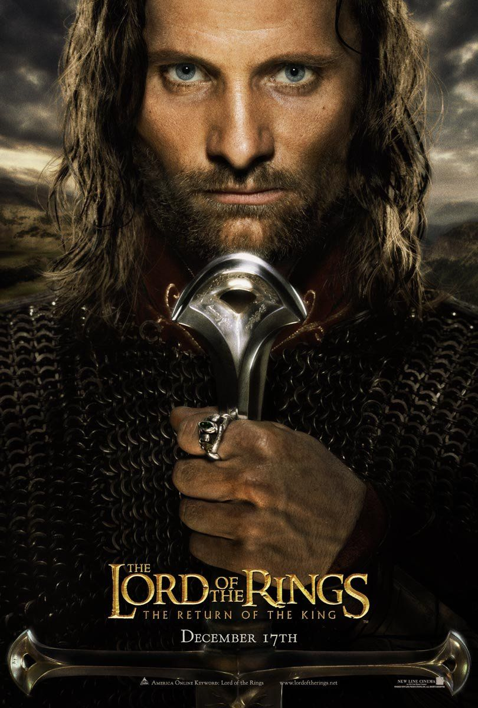

The Lord Of The Rings: The Return Of The King
Eleven nominations, Eleven Oscars. As many as only "Titanic" and "Ben Hur" (who, however, had received more nominations during their time). The Academy honored the overall performance of Peter Jackson, a former B-Splatter director who shot three Tolkien films all at once, and set up a crew in New Zealand for more than a year, fearing the production company "New Line Cinema".
Of course, the most beautiful movie remains part one, "The Companions," featuring younger indie charm from Jackson's early works. The "two towers" as well as the "Return of the King" was to be noted after the huge success of the first, that depending on re-shooting and re-cutting - to see more of the love story of the moose - and even more the blockbuster feeling aroused. But Jackson had the chutzpah, the spectacular death of the great villain Christopher Lee alias Saruman simply cut out due to time constraints (is in the Director's Cut back in).
Nevertheless: finally, finally a fantasy work as "Best Movie".
Favourite Quote:
It is useless to meet revenge with revenge: it will heal nothing." The Return of the King
Cast
| Character | Actor |
|---|---|
Frodo Baggins |
Elijah Wood |
Gandalf | Ian McKellen |
Aragorn | Viggo Mortensen |
Samwise Gamgee | Sean Astin |